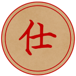
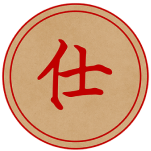
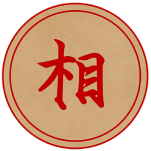
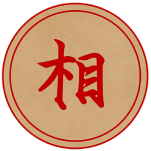

Giới Thiệu Về Cờ Tướng
Chơi cờ tướng là một nét đẹp trong văn hóa truyền thống của người Châu Á đặc biệt là người Việt. Mỗi ván
cờ, mỗi nước đi đều thể hiện sự mạnh mẽ trong con người, lối tư duy dị biệt còn hơn nữa là một trí tuệ
siêu đẳng. Để tạo ra một không gian giao lưu cho các cờ thủ cũng như là nơi giải trí sau mỗi lúc căng
thẳng.
Ván cờ được tiến hành giữa hai người, một người cầm quân Trắng (hay Đỏ), một người cầm quân Đen (hay
Xanh lục). Mục đích của mỗi người là tìm mọi cách đi quân trên bàn cờ theo đúng luật để chiếu bí hay bắt
Tướng (hay Soái/Suý) của đối phương

Bàn Cờ
Bàn cờ là một hình chữ nhật do 9 đường dọc và 10 đường ngang cắt nhau vuông góc tại 90 điểm hợp thành.
Một khoảng trống gọi là sông (hay hà) nằm ngang giữa bàn cờ, chia bàn cờ thành hai phần đối xứng bằng
nhau. Mỗi bên có một cung Tướng hình vuông (Cửu cung) do 4 ô hợp thành tại các đường dọc 4, 5, 6 kể từ
đường ngang cuối của mỗi bên, trong 4 ô này có vẽ hai đường chéo xuyên qua.
Theo quy ước, khi bàn cờ được quan sát chính diện, phía dưới sẽ là quân Trắng (hoặc Đỏ), phía trên sẽ là
quân Đen (hoặc Xanh lục). Các đường dọc bên Trắng (Đỏ) được đánh số từ 1 đến 9 từ phải qua trái. Các
đường dọc bên Đen (Xanh lục) được đánh số từ 9 tới 1 từ phải qua trái.
.svg.png)
Cách Xếp Cờ
Để sắp xếp bàn cờ tướng bạn chỉ cần thuộc các quân cờ được mô tả ở dưới sau đó sắp xếp như hình mẫu bên dưới
là được.
Cách Duy Chuyển
Quân cờ được di chuyển theo luật sau:
1.Tướng: Đi từng ô một, đi ngang hoặc dọc. Tướng luôn luôn phải ở trong phạm vi cung và không được
ra ngoài.
“Cung” tức là hình vuông 3×3 được đánh dấu bởi lằng chéo hình chử X.
2.Sĩ: Đi xéo 1 ô mỗi nước. Sĩ luôn luôn phải ở trong cung như con Tướng.
3.Tượng: Đi chéo 2 ô (ngang 2 và dọc 2) cho mỗi nước đi. Tượng chỉ được phép ở một bên của bàn cờ,
không
được di chuyển sang nữa bàn cờ của đối phương. Nước đi của tượng sẽ không hợp lệ khi có một quân cờ nằm chặn
giữa đường đi.
4.Xe: Đi ngang hay dọc trên bàn cờ miễn là đừng bị quân khác cản đường từ điểm đi đến điểm đến.
5.Mã: Đi ngang 2 ô và dọc 1 ô (hay dọc 2 ô và ngang 1 ô) cho mỗi nước đi. Nếu có quân nằm ngay bên
cạnh mã
và cản đường ngang 2 (hay đường dọc 2), mã bị cản không được đi đường đó.
6.Pháo: Đi ngang và dọc giống như xe. Điểm khác biệt là nếu pháo muốn ăn quân, pháo phải nhảy qua
đúng 1
quân nào đó. Khi không ăn quân, tất cả những điểm từ chổ đi đến chổ đến phải không có quân cản.
7.Chuột: (hay Tốt) đi một ô mỗi nước. Nếu chuột chưa vượt qua sông, nó chỉ có thể đi thẳng tiến. Khi
đã vượt
sông rồi, chuột có thể đi ngang 1 nước hay đi thẳng tiến 1 bước mỗi nước.
8.Ăn quân: Khi quân di chuyển đến 1 vị trí giử bởi quân đối phương, quân đối phương bị ăn và bị lấy
ra khỏi
bàn cờ.
9.Chống tướng: Hai con tướng trên bàn không được nằm trên cùng 1 cột dọc mà không có quân cản nào ở
giữa.
Nước đi để 2 con tướng trong vị trí chống tướng là không hợp lệ.
10.An toàn của tướng: Sau 1 nước đi, tướng của phe đi không được để quân đối phương ăn ngay trong
nước tiếp.
Những nước để tướng không an toàn là không hợp lệ.
Kết Thúc Trận Đấu
1.Chiếu bí: Nếu một bên chiếu (bắt tướng), và đối thủ không có khả năng đở, bên chiếu tướng
thắng.
2.Hết nước đi: Nếu bên tới phiên đi nhưng không có nước hợp lệ để đi, bên đó sẽ bị thua.
3. Sau 120 nước đi của cả 2 bên, mà ko có quân nào bị ăn thì hòa nhau.
4. Cấm chiếu tướng liên tục 10 lần
5.Ăn quân: Khi quân di chuyển đến 1 vị trí được giữ bởi quân đối phương, quân đối phương bị ăn và
bị lấy
ra khỏi bàn cờ.
6.Chống Tướng: Hai con tướng trên bàn không được nằm trên cùng 1 cột dọc mà không có quân cản nào
ở
giữa. Nước đi để 2 con tướng trong vị trí chống tướng là không hợp lệ.
7.Tổng thời gian toàn trận đấu: nếu để hết giờ trước đối thủ người chơi sẽ bị xử thua!
8.Thời gian cho một lượt đánh: mỗi lượt đánh sẽ có tối đa là 1 phút. Nếu để hết giờ mà không đánh
một
quân cờ người chơi sẽ bị xử thua!

 

 
